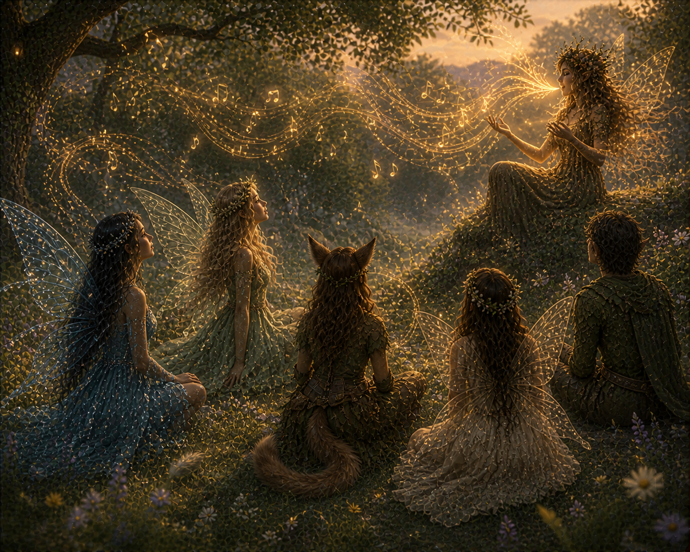

You and your friends followed the singing. As you got closer to the voice, it started to take over your consciousness, but you also couldn't stop walking. The forest siren appears sitting on a rock, still singing sweetly. You and your friends, unable to break away, sat and listened with no intention of leaving.